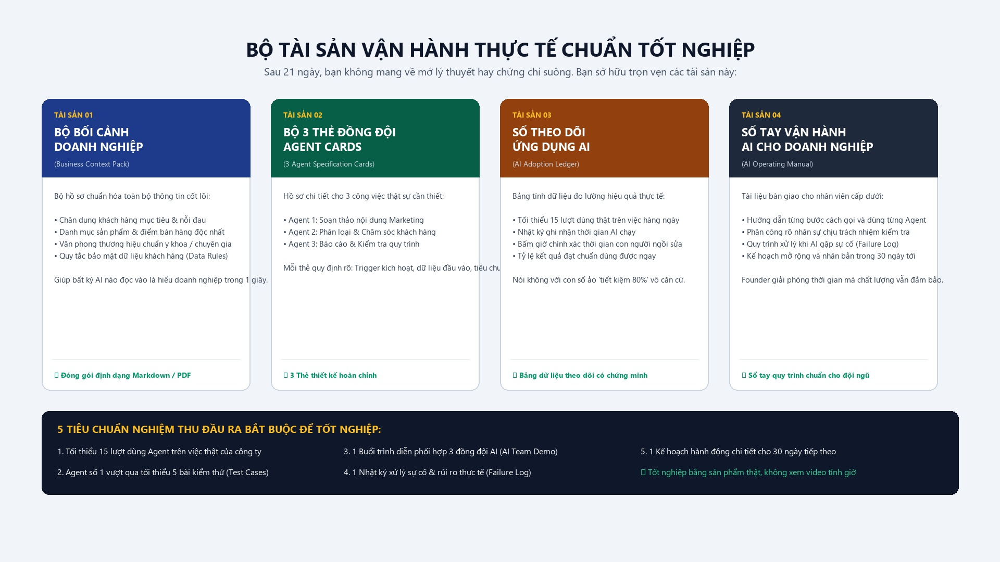

Kết quả thay đổi theo người dùng và cách họ nhớ prompt.
Thử thách AI First cho doanh nghiệp dịch vụ
Giao AI một việc thật.
Trong 21 ngày, bạn đưa 3 việc lặp lại vào quy trình AI có người duyệt và số liệu thật.
Finish line sau 21 ngàyKhông tính giờ xem video. Chỉ nghiệm thu bằng đầu ra dùng được.
3quy trình AI trên việc thật
15+lượt dùng có ghi nhận
1quy trình bàn giao cho nhân sự
Bạn không thiếu công cụ.
Bạn thiếu một cách làm để AI không tạo thêm việc cho founder.
Nếu mọi đầu ra vẫn chờ bạn sửa, đội ngũ đang dùng AI như một chiếc máy hỏi đáp. Chưa phải một phần của vận hành.
Nội dung, phản hồi khách và báo cáo vẫn phải chờ bạn đọc lại.
Không ai biết đầu ra nào dùng được, lỗi nào phải dừng và ai là người duyệt.
Thời gian AI chạy, thời gian người sửa và tỷ lệ chấp nhận chưa từng được ghi lại.
Một ca mẫu có thể đọc trong 5 phút
Từ cuộc gọi tư vấn đến email theo sát khách hàng.
Đây là ví dụ minh họa cách một việc thật đi qua Vòng Lặp 5G. Không phải cam kết kết quả giống nhau.
Founder tự đọc transcript, tìm vấn đề, soạn email và nhớ việc cần theo sát.
AI trích nhu cầu, soạn đúng giọng và đánh dấu phần cần founder quyết định.
-
Gọi tên việc
Chốt chính xác việc AI phải nhận và phải trả.
Transcript là đầu vào. Email theo sát khách hàng là đầu ra. Không bắt đầu bằng câu hỏi chung chung như “AI có thể giúp gì?”.
-
Gạn lọc việc
Tách phần AI được làm khỏi phần con người phải giữ.
AI được đọc, trích ý và soạn nháp. AI không được tự gửi, tự chốt giá hoặc đưa ra cam kết với khách hàng.
-
Giao đúng việc
Đóng gói bối cảnh thay vì viết prompt dài hơn.
Gói dịch vụ, giọng thương hiệu, phản đối thường gặp và những email tốt được đưa thành bộ bối cảnh dùng lại.
-
Giám sát việc
Thử cả trường hợp bình thường lẫn trường hợp dễ sai.
Chạy năm tình huống, ghi lỗi lặp lại, đặt tiêu chuẩn chấp nhận và xác định lúc nào AI phải dừng để người thật xử lý.
-
Gắn vào vận hành
Dùng lặp lại, đo thật rồi mới quyết định mở rộng.
Ghi thời gian AI xử lý, thời gian con người sửa, tỷ lệ đầu ra đạt chuẩn và lỗi còn lặp lại trước khi bàn giao.

Tốt nghiệp bằng tài sản vận hành.
Bốn thứ còn ở lại sau thử thách.
Khách hàng, dịch vụ, giọng thương hiệu, quy tắc dữ liệu và mẫu đầu ra tốt.
Đầu vào, tiêu chuẩn, giới hạn và điểm bàn giao cho người thật.
Thời gian xử lý, phần người sửa, lỗi và tỷ lệ đầu ra đạt chuẩn.
Quy trình, người chịu trách nhiệm và kế hoạch áp dụng 30 ngày tiếp theo.
Bạn không mua một kho prompt.
Bạn tự xây. AI hỗ trợ. Chương trình giữ chuẩn.
Mỗi ngày chỉ mở một nhiệm vụ. Bài làm phải dựa trên công việc thật và có bằng chứng đi kèm.
- Nhận nhiệm vụ rõMục tiêu, thời lượng, mẫu khởi động và tiêu chuẩn hoàn thành.
- Làm trên việc thậtDùng AI để tìm cách giải quyết, không chép một bộ prompt chung.
- Nộp bằng chứngĐầu ra, test case, thời gian xử lý và phần con người đã sửa.
- Nhận phản hồiChỉnh theo rubric rồi mang phiên bản đạt chuẩn vào lần dùng tiếp theo.
21 ngày, bốn lần nghiệm thu.
Công cụ có thể thay đổi. Tiêu chuẩn đầu ra và bốn mốc này không đổi.
Chọn đúng việc
Vẽ bản đồ công việc, đo baseline và đặt quy tắc dữ liệu.
Một việc ưu tiên và ranh giới an toànTạo quy trình đầu tiên
Xây bộ bối cảnh, thẻ giao việc và chạy năm bài kiểm thử.
Một quy trình có người duyệtMở rộng thêm hai việc
Dùng cùng cách nghĩ để thiết kế hai quy trình tiếp theo.
Ba quy trình có cùng tiêu chuẩnBàn giao và đo thật
Thử lỗi, ghi số liệu, giao một quy trình cho nhân sự và đóng gói sổ tay.
Demo, nhật ký và kế hoạch 30 ngày
Người trực tiếp đồng hành
Vũ Tuấn Anh
Tôi xây AI Vào Việc 21 để cùng doanh nghiệp nhỏ kiểm chứng một cách làm AI First trên công việc thật. Tôi trực tiếp xem bài, đặt câu hỏi, sửa rubric và theo dõi phần nào thực sự được đội ngũ sử dụng.
Đây là Founding Cohort nên tôi không dùng thành tích hoặc case study chưa tồn tại để thuyết phục bạn. Đổi lại, nhóm được giữ nhỏ và mọi phản hồi đều đi thẳng vào quy trình đang triển khai.
Founding Cohort tháng 9/2026
Một buổi nhóm mỗi tuần. Hai mươi mốt ngày triển khai.
Nhận hồ sơ đến ngày 25/09/2026 hoặc khi đủ 8 doanh nghiệp. Khung giờ được thống nhất với nhóm trước ngày khai mạc.
- Khởi động và chọn việcChốt baseline, việc ưu tiên và quy tắc dữ liệu.
- Sửa quy trình đầu tiênReview bộ bối cảnh, thẻ giao việc và test case.
- Sửa cách mở rộngKiểm tra hai quy trình tiếp theo và điểm bàn giao.
- Demo DayTrình diễn, nghiệm thu và chốt kế hoạch 30 ngày.
Chỉ phù hợp khi bạn có việc thật để thay đổi.
Chương trình được thiết kế cho doanh nghiệp dịch vụ nhỏ, nơi founder đang là người duyệt quá nhiều việc lặp lại.
Nên tham gia nếu
- Doanh nghiệp có 3-20 nhân sự
- Đội ngũ đã thử AI nhưng dùng rời rạc
- Có một người đủ quyền thay đổi cách làm
- Có thể dành 30-45 phút mỗi ngày
Chưa nên tham gia nếu
- Muốn tải prompt về rồi để đó
- Muốn người hướng dẫn làm Agent hộ
- Muốn tự động hóa 100% không kiểm duyệt
- Cần tích hợp API hoặc hệ thống kỹ thuật sâu
Nhóm triển khai đầu tiên
Tối đa 8 doanh nghiệp. Mỗi doanh nghiệp tối đa 2 người.
Quy mô nhỏ để từng doanh nghiệp được phản hồi trên chính quy trình đang chạy, không chỉ nghe lý thuyết chung.
Cam kết hỗ trợ triển khai
Nếu hoàn thành ít nhất 18/21 nhiệm vụ, đủ bốn mốc nghiệm thu và quy trình đầu tiên vẫn chưa đạt rubric, bạn nhận một buổi cứu bài riêng cùng 14 ngày hỗ trợ thêm.
Điều kiện Soft Launch được nói rõ trước khi bạn đăng ký.
Không thu phí ở bước nộp hồ sơ. Không sử dụng dữ liệu hoặc bài làm của doanh nghiệp để làm nội dung nếu chưa được đồng ý.
Thông tin trong Google Form chỉ được dùng để đánh giá mức phù hợp và liên hệ về Founding Cohort. Bạn có thể yêu cầu chỉnh sửa hoặc xóa hồ sơ qua Zalo 0868 532 538. Không gửi dữ liệu khách hàng nhạy cảm trong form.
Chỉ chuyển khoản sau cuộc trao đổi phù hợp và khi đã nhận xác nhận tham gia. Thông tin tài khoản được gửi riêng, không công khai trên website.
Điều kiện hoàn, hủy hoặc chuyển suất sẽ được gửi bằng văn bản trước khi bạn quyết định chuyển khoản. Nộp hồ sơ không tạo nghĩa vụ thanh toán.
Tài liệu doanh nghiệp tạo ra thuộc về doanh nghiệp. Chỉ sử dụng làm case study khi có sự đồng ý riêng về nội dung được phép công khai.
Cần rõ trước khi đăng ký.
Phạm vi được nói thẳng để hai bên không kỳ vọng sai.
Không biết code có tham gia được không?
Có. Chương trình tập trung vào chọn việc, giao bối cảnh, đặt tiêu chuẩn, kiểm thử và đo mức sử dụng.
Mỗi ngày cần bao nhiêu thời gian?
Phần lớn nhiệm vụ được thiết kế trong 30-45 phút. Ngày kiểm thử hoặc trình diễn có thể cần thêm thời gian.
Có cần mua thêm công cụ không?
Bạn cần ít nhất một tài khoản AI đang sử dụng. Chi phí công cụ bên thứ ba không nằm trong học phí.
Dữ liệu doanh nghiệp được xử lý thế nào?
Ngày đầu có quy tắc phân loại và ẩn danh dữ liệu. Không nộp dữ liệu khách hàng nhạy cảm lên cộng đồng.
Ngành của tôi khác ví dụ trong trang thì sao?
Bạn dùng cùng Vòng Lặp 5G nhưng chọn đầu việc, bối cảnh, tiêu chuẩn và bài kiểm thử từ chính doanh nghiệp của mình.
Buổi nhóm có được xem lại không?
Hình thức ghi hình sẽ được thống nhất với nhóm trước ngày khai mạc để bảo vệ thông tin doanh nghiệp được chia sẻ trong buổi học.
Bài làm có bị sử dụng làm case study không?
Không tự động. Chỉ những nội dung được doanh nghiệp đồng ý riêng mới có thể được sử dụng làm case study công khai.
Chương trình có xây Agent hộ tôi không?
Không. Bạn tự xây trên công việc của mình để có thể sửa, vận hành và xử lý sự cố sau chương trình.
Nếu lỡ một ngày thì sao?
Bạn có thể hoàn thành sau đó. Điều kiện nhận hỗ trợ triển khai yêu cầu tối thiểu 18/21 nhiệm vụ và đủ bốn mốc nghiệm thu.
AI không cần thêm một buổi demo đẹp.